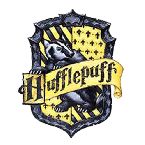

기숙사 배정 방식
기숙사 배정은 신입생들을 대상으로 매년 새학기마다 기숙사 배정식을 통해 이루어진다.창립자들이 살아있을 때에는 그들이 직접 학생들을 선발했지만 죽고 난 뒤에는 기숙사 배정 모자의 판단에 따라 기숙사가 배정된다.
전설에 따르면 기숙사 배정 모자는 원래 고드릭 그리핀도르의 소유로, 네 창립자가 마법을 걸어두어 창립이념에 맞는 학생들을 각각 배정하도록 되어있다고한다.
호그와트의 기숙사에는 '그리핀도르', '래번클로', '후플푸프', '슬리데린'이 있다.
각 기숙사의 명칭은 각각 호그와트 창립자인 고드릭 그리핀도르, 로웨나 래번클로, 헬가 후플푸프, 살라자르 슬리데린의 이름을 따서 지어졌다.
각 기숙사마다 창립이념, 상징 동물, 상징 색, 상징 원소, 사감, 휴게실, 기숙사 유령, 교복, 상징 색, 퀴디치 팀 등이 존재한다.
그리핀도르
*창립이념: "용기를 보여주는 아이들만 받아들이자"
*상징 동물: 사자
*상징 색: 붉은색, 금색
*특성: 용기, 기사도 정신
*기숙사 유령: 목이 달랑달랑한 닉(니콜라스 드 밈시 포르핑턴 경)
*기숙사 입구: 그리핀도르 탑의 뚱보 여인 사진(벽에 걸려있는 액자 속 뚱보 여인에게 정기적으로 바뀌는 암호를 말하면 들어갈 수 있다)
*사감: 맥고나걸 교수
*기타: 슬리데린과 앙숙 관계이다
그리핀도르의 상징 '그리핀도르의 검'
※그리핀도르의 검은 그리핀도르 기숙사의 창립자 고드릭 그리핀도르의 것이었다. 진정한 그리핀도르만이 이 검을 찾아낼 수 있다고 하며, 해리는 이 검으로 바실리스크를 죽이고, 슬리데린의 로켓을 파괴했다. 후에 이 검은 네빌이 내기니의 머리를 베는 데에 사용되기도 했다.
*그리핀도르 학생: 포터 가족(해리,제임스,릴리), 위즐리 가족(론,지니,조지,프레드 등), 헤르미온느 그레인저, 네빌 롱바텀, 딘 토마스, 시무스 피니간, 올리버 우드, 케이티 벨, 라벤더 브라운, 패르바티 패틸, 크리비 형제(콜린,데니스), 로밀다 베인, 알버스 덤블도어, 시리우스 블랙, 리무스 루핀 등
슬리데린
※슬리데린의 창립자 살라자르 슬리데린은 다른 호그와트 창립자들과의 불화로 호그와트에 비밀의 방을 만든 후 학교를 떠났으며 파셀통크(뱀의 언어)를 할 수 있다고 알려졌다.
*창립이념: "순수 혈통의 아이들만 받아들이자"
*상징 동물: 뱀
*상징 색: 녹색, 은색
*특성: 지략, 교활, 야망
*기숙사 유령: 피투성이 바론
*사감: 세베루스 스네이프 -> 호레이스 슬러그혼
*기타: 그리핀도르와 앙숙 관계이다
순수혈통주의자가 많으며, 일부 학생은 머글 태생의 학생을 무시하는 태도를 가진다.
죽음을 먹는 자 대부분이 슬리데린 출신이다. 따라서 어둠의 마법사 대부분이 슬리데린을 나왔다고 생각하면 된다.
*슬리데린 학생: 말포이 가족(드레이코,루시우스,나시사), 팬시 파킨스, 빈센트 크레이브, 그레고리 고일, 블레이즈 자비니, 벌스트로드 밀리센트, 벨라트릭스 래스트랭, 톰 리들(볼드모트), 세베루스 스테이프 등
래번클로

*창립이념: "똑똑하고 지혜로운 아이들만 받아들이자"
*상징 동물: 독수리
*상징 색: 파란색, 청동색
*특성: 지능, 지혜
*기숙사 유령: 회색 여인(회색 여인의 본명은 헬레나 래번클로로, 래번클로 기숙사의 창립자 로웨나 래번클로의 딸이다.)
*기숙사 입구: 서쪽 탑의 청동 독수리상
※래번클로 기숙사로 들어가기 위해서는 다른 기숙사처럼 암호를 대는 것이 아니라 청동 독수리상이 내는 문제를 풀어야 한다. 그래서 문제가 어려울 때는 학생들이 독수리상 앞에 모여 다같이 문제를 푸는 광경도 종종 보인다.
*사감: 필리우스 플리트윅
래번클로의 상징 '래번클로의 보관'
※래번클로의 보관은 원래 로웨나 래번클로의 것이었으나 로웨나의 딸인 헬레나 래번클로가 훔쳐 달아나고, 후에 볼드모트의 호크룩스가 되지만 결국 크레이브의 악마의 불에 의해 파괴되었다. 이것을 쓰면 지혜를 얻을 수 있다고 알려졌다.
*래번클로 학생: 루나 러브굿, 파드마 패틸, 초 챙, 페넬로페 클리어워터, 테리 부트, 마이클 코너 등.
후플푸프

*창립자: 헬가 후플푸프(Helga Hufflepuff)*창립이념: "모든 아이들을 차별없이 받아들이자"
*상징 동물: 오소리
*상징 색: 노란색, 검은색
*특성: 친절, 인내, 관용
*기숙사 유령: 프라이어(쾌활하고 뚱뚱한 수도사)
*기숙사 입구: 부엌
*사감: 포모나 스프라우트
*기타: 나머지 세 기숙사 모두에 속하지 않는 학생이 들어온다는 인식이 강하다. 따라서 성격이 좋다거나, 혹은 바보들이 모여있는 기숙사라는 이미지가 있고, 가장 많은 학생들이 있는 기숙사이기도 하다.
※후플푸프 학생들이 호그와트 전쟁에 참전한 이유는 다른 기숙사와는 다르게(그리핀도르는 '영광', 래번클로는 '손익', 슬리데린은 '야심'이 목적이었다) 그것이 '옳기' 때문이었다고 한다.
*후플푸프 학생: 케드릭 디고리, 어니 맥밀란, 한나 아보트, 저스틴 핀치, 수잔 본즈, 님파도라 통스, 뉴트 스캐맨더 등 > 기숙사 배정 다시 받아보기